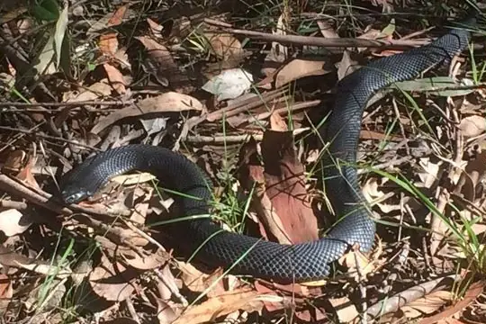
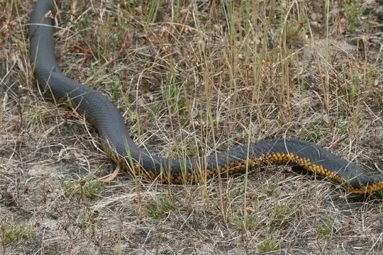
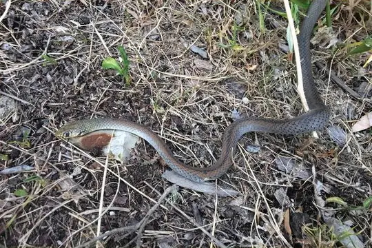
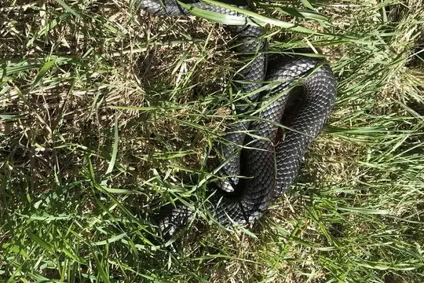
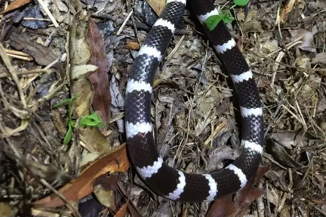

Snakes of South Australia
A state or territory of Australia
35 snake species are recorded in South Australia, a state or territory of Australia, in SnakeList: 30 venomous and 5 non-venomous, from 3 families.
- 35species
- 30venomous
- 5non-venomous
- 3families
- 2found only here
SnakeList records where snakes live by country and by state or territory, not by exact spot, so a species listed here may live in only part of South Australia. All snakes of Australia.
Most widely recorded
The species here that have research-grade iNaturalist records in the most places across their whole range - not just in South Australia. That shows how often people have photographed them, not how many live here.
 Eastern Brown SnakePseudonaja textilis
Eastern Brown SnakePseudonaja textilis
Australian black snakePseudechis porphyriacus
Mainland Tiger SnakeNotechis scutatus
Yellow-faced Whipsnake (psammophis)Demansia psammophis Mulga SnakePseudechis australis
Mulga SnakePseudechis australis
Copperhead SnakeAustrelaps superbus Children's PythonAntaresia childreni
Children's PythonAntaresia childreni
Bandy BandyVermicella annulata
Snake families
Venomous and non-venomous
Venomous: 30Non-venomous: 5
30 are listed by SnakeList as dangerous to people: Australian black snake Pseudechis porphyriacus, Bandy Bandy Vermicella annulata, Bardick Echiopsis curta, Bush’s Hooded Snake Suta spectabilis, Common Death Adder Acanthophis antarcticus, Copperhead Snake Austrelaps superbus, Coral Snake Brachyurophis australis, De Vis Banded Snake Denisonia devisi, Desert Banded Snake Simoselaps bertholdi, Dugite Pseudonaja affinis, Eastern Brown Snake Pseudonaja textilis, Half-girdled Snake Brachyurophis semifasciatus, Inland Taipan Oxyuranus microlepidotus, Mainland Tiger Snake Notechis scutatus, Mallee Black-backed Snake Suta nigriceps, Masters' Snake Drysdalia mastersii, Mengden's Gwardar Pseudonaja mengdeni, Mulga Snake Pseudechis australis, Myal Snake Suta suta, Narrow-banded Burrowing Snake Brachyurophis fasciolatus, Orange-naped Snake Furina ornata, Peninsula Brown Snake Pseudonaja inframacula, Pygmy Copperhead Austrelaps labialis, Red-naped Snake Furina diadema, Ringed Brown Snake Pseudonaja modesta, Strap-snouted Brown Snake Pseudonaja aspidorhyncha, Variable Black-naped Snake Suta dwyeri, Whip Hooded Snake Suta flagellum, White-lipped Snake Drysdalia coronoides, Yellow-faced Whipsnake (psammophis) Demansia psammophis.
Found only here
Recorded in no other state or territory or country in SnakeList’s data. That may mean it lives only here, but it can also mean it has not been recorded elsewhere yet.
- Peninsula Brown Snake Pseudonaja inframacula
- Pygmy Copperhead Austrelaps labialis
Habitats (rough estimate)
How many of its living snakes have each kind of habitat in SnakeList’s estimate. That estimate comes from every country, state and province where each snake is recorded - not from a survey of South Australia, and not checked species by species.
Who described them
The scientists who first described its most widely recorded snakes, and when.
- Eastern Brown Snake Pseudonaja textilis - described by Duméril, Bibron & Duméril in 1854 (under another genus name)
- Australian black snake Pseudechis porphyriacus -
- Mainland Tiger Snake Notechis scutatus - described by Peters in 1861 (under another genus name)
- Yellow-faced Whipsnake (psammophis) Demansia psammophis -
- Mulga Snake Pseudechis australis -
- Copperhead Snake Austrelaps superbus -
- Children's Python Antaresia childreni -
- Bandy Bandy Vermicella annulata -
Names and dates come from SnakeList’s reviewed species accounts; the others are looked up on Wikidata (CC0) when this page opens.
Biggest cities
The biggest cities in South Australia from SnakeList’s city list, biggest first (placed here by their map position).
Nearby states and territories
The closest other states and territories of Australia in SnakeList.
- Victoria 22 species
- New South Wales 45 species
- Australian Capital Territory 6 species
- Tasmania 3 species
- Jervis Bay Territory 2 species
All 35 species
- Australian black snake Pseudechis porphyriacus venomous
- Bandy Bandy Vermicella annulata venomous
- Bardick Echiopsis curta venomous
- Bush’s Hooded Snake Suta spectabilis venomous
- Children's Python Antaresia childreni
- Common Death Adder Acanthophis antarcticus venomous
- Copperhead Snake Austrelaps superbus venomous
- Coral Snake Brachyurophis australis venomous
- Dark-spined Blind Snake Anilios bicolor
- De Vis Banded Snake Denisonia devisi venomous
- Desert Banded Snake Simoselaps bertholdi venomous
- Dugite Pseudonaja affinis venomous
- Eastern Brown Snake Pseudonaja textilis venomous
- Half-girdled Snake Brachyurophis semifasciatus venomous
- Inland Taipan Oxyuranus microlepidotus venomous
- Interior Blind Snake Anilios endoterus
- Mainland Tiger Snake Notechis scutatus venomous
- Mallee Black-backed Snake Suta nigriceps venomous
- Masters' Snake Drysdalia mastersii venomous
- Mengden's Gwardar Pseudonaja mengdeni venomous
- Mulga Snake Pseudechis australis venomous
- Myal Snake Suta suta venomous
- Narrow-banded Burrowing Snake Brachyurophis fasciolatus venomous
- Orange-naped Snake Furina ornata venomous
- Peninsula Brown Snake Pseudonaja inframacula venomous
- Prong-snouted Blind Snake Anilios bituberculatus
- Pygmy Copperhead Austrelaps labialis venomous
- Red-naped Snake Furina diadema venomous
- Ringed Brown Snake Pseudonaja modesta venomous
- Strap-snouted Brown Snake Pseudonaja aspidorhyncha venomous
- Variable Black-naped Snake Suta dwyeri venomous
- Whip Hooded Snake Suta flagellum venomous
- White-lipped Snake Drysdalia coronoides venomous
- Woma Aspidites ramsayi
- Yellow-faced Whipsnake (psammophis) Demansia psammophis venomous
No snake here matches that.